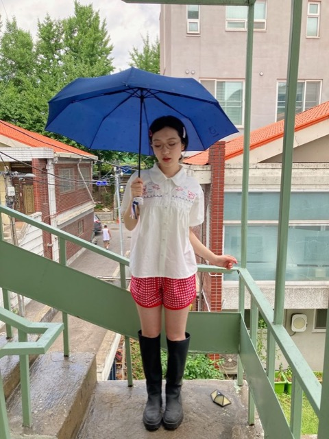
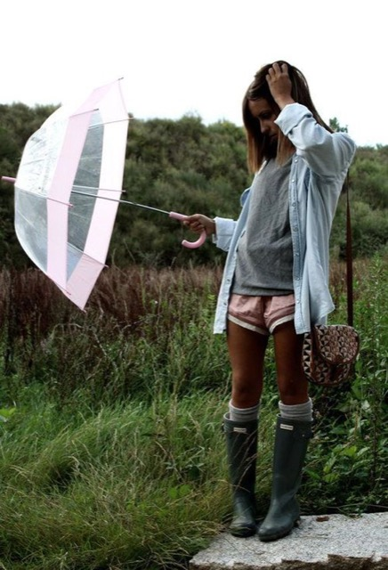

3분의 망설임
옷은 충분하고 저장한 사진도 많지만, 바쁜 아침에는 나에게 맞는 한 벌을 고르기 어렵습니다.
날씨와 내 취향 사이의 망설임을 줄여주는 코디 큐레이션. rainism은 “무엇을 입지?”라는 아침의 작은 결정을 대신합니다.
01 / PORTFOLIO CASE STUDY · 2026

비 오는 따뜻한 날 · 우산 필수
옷은 충분하고 저장한 사진도 많지만, 바쁜 아침에는 나에게 맞는 한 벌을 고르기 어렵습니다.
예쁜 룩과 오늘 실제로 입을 수 있는 룩 사이에는 온도, 비, 습도라는 현실이 있어요.
rainism은 영감을 더 쌓기보다, 오늘 바로 입을 수 있는 선택지 3개를 건넵니다.
사용자가 복잡한 조건을 입력하는 대신, rainism은 날씨와 취향을 연결해 오늘의 현실적인 코디를 보여줍니다.
세 가지 취향 질문으로 지금의 무드, 색, 자주 가는 장소를 가볍게 선택해요.
체감온도와 강수를 기준으로, 오늘 입기 어려운 코디부터 먼저 제외합니다.
취향과 가까운 룩을 다양하게 보여주고, 그중 하나는 언제나 편안한 안전빵으로 남겨요.
기획에 머물지 않고, 온보딩부터 날씨별 추천, 저장 캘린더까지 실제로 눌러볼 수 있는 모바일 프로토타입을 만들었습니다.


작은 제품 결정마다 ‘오늘 실제로 입을 수 있는가’를 가장 먼저 물었습니다.
비나 체감온도에 맞지 않는 룩을 먼저 걸러, 랜덤한 추천처럼 느껴지지 않게 합니다.
옷을 조각내 조합하는 대신 분위기 전체를 기준으로 내 취향과 가까운 룩을 찾습니다.
세 가지 추천 중 최소 하나는 평소에도 부담 없이 입을 수 있는 룩으로 제안합니다.
저장과 ‘입었어요’는 소셜 피드가 아닌, 나만 보는 코디 캘린더에 차곡차곡 쌓입니다.
날씨는 매일 바뀌어도, 나를 고르는 감각은 조금 더 단단해질 수 있다고 믿어요.
Rainism 경험해보기 ↗